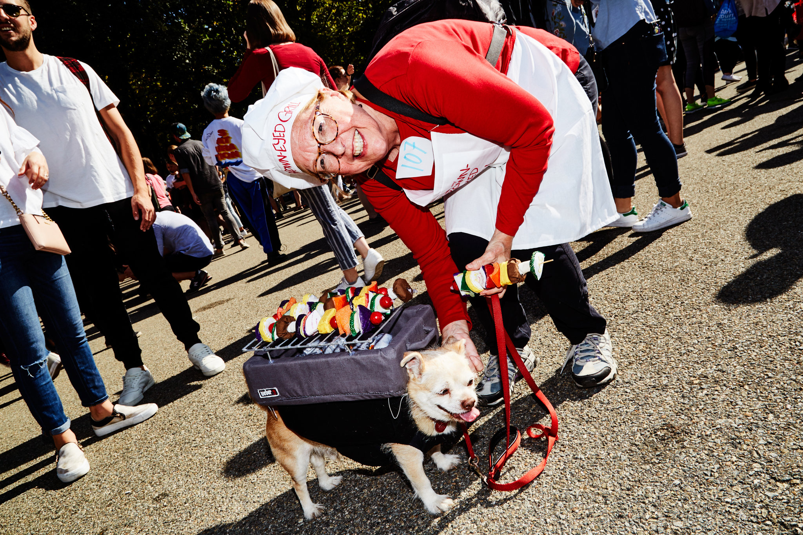
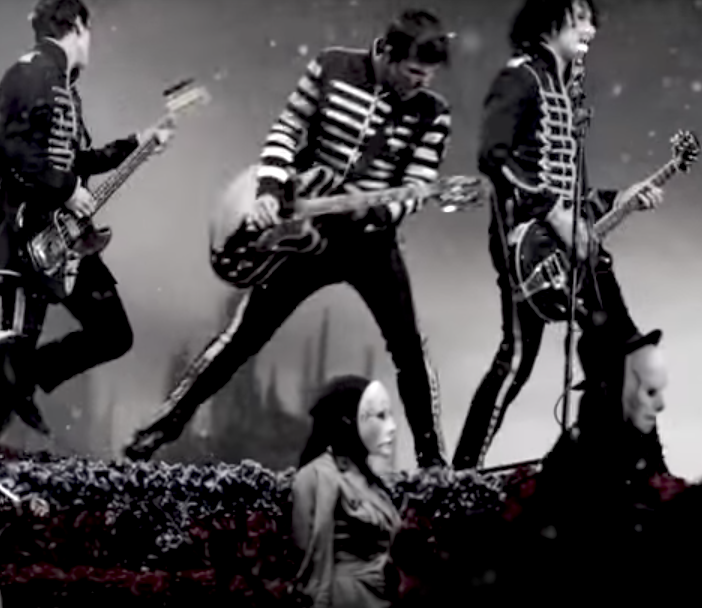
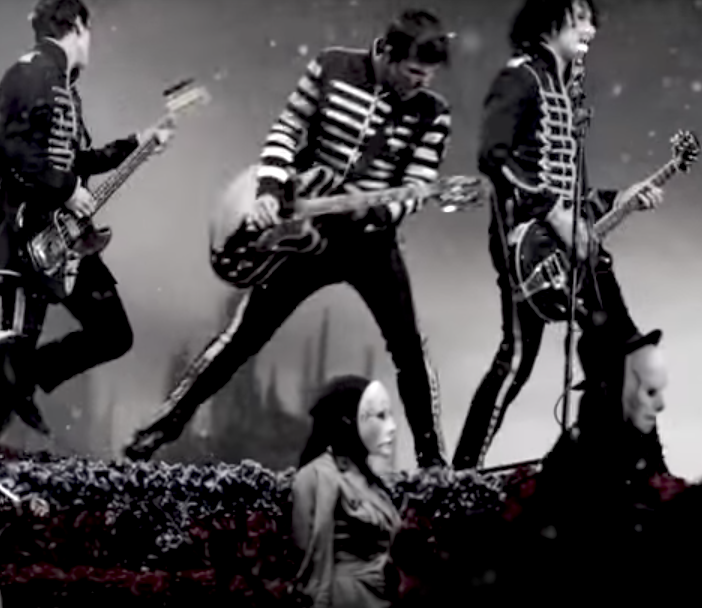

Halloween Dog Parade
 A Pomeranian made for a tiny interpretation of King Tut.
A Pomeranian made for a tiny interpretation of King Tut.
 Macaroon and his owner, Holly Tooker, are regulars at the dog parade. This time around, he came as the "Brown-Eyed Grill" to her veggie-skewering chef. "Last year he was the Basket of Adorables," Ms. Tooker said. "He's been a pincushion, a stick of butter, a taco, a box of tissues -- I was the Ebola lady -- a Hershey's Kiss and a bag of money."
Does he enjoy being dressed up?
"No, but he does like roast beef," she said before giving him a treat.
The Black Parade
Take a look at me cause I could not care at all
Do or die, you'll never make me
Because the world will never take my heart
Go and try, you'll never break me
We want it all, we wanna play this part
I won't explain or say I'm sorry
I'm unashamed, I'm gonna show my scars
Give a cheer for all the broken
Listen here, because it's who we are
I'm just a man, I'm not a hero
Just a boy, who had to sing this song
I'm just a man, I'm not a hero
I don't care


